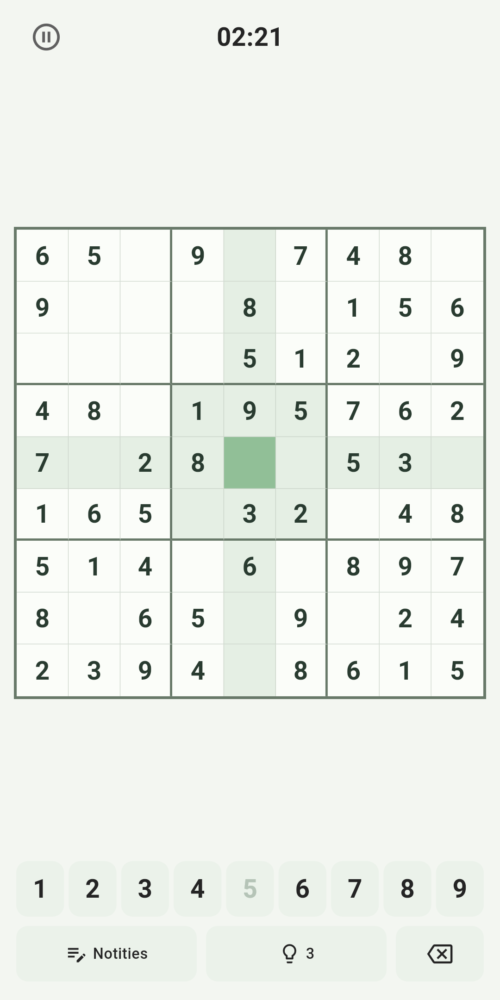
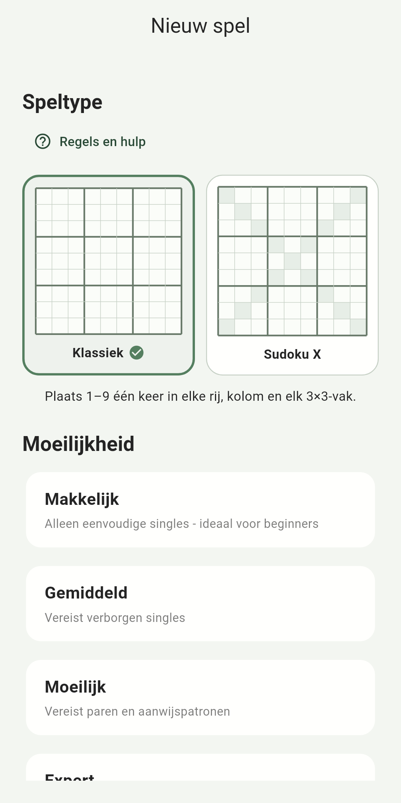
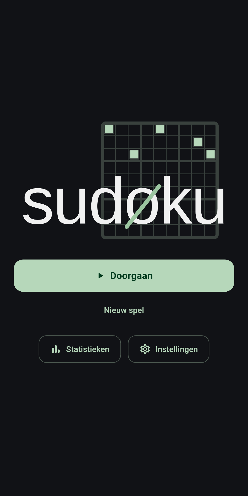

sudøku
Een gerichte Sudoku-app rond het plezier van oplossen. Nieuwe puzzels worden rechtstreeks op je apparaat gemaakt, met doordachte hulpmiddelen wanneer je ze wilt en een rustig bord wanneer je ze niet nodig hebt.
Een kijkje in sudøku



Gemaakt voor de puzzel
sudøku is ontworpen om dagelijks oplossen prettig te maken: kies een moeilijkheid, focus op het bord en gebruik zoveel of zo weinig hulp als bij je past.
Nieuwe puzzels, gemaakt op je apparaat
Puzzels worden lokaal gegenereerd en gevalideerd, zodat je altijd nieuwe spellen hebt zonder afhankelijk te zijn van een catalogus in de cloud.
Een bord voor concentratie
Duidelijke bediening, leesbare cijfers, doordachte feedback en zorgvuldig gekozen interacties houden de aandacht bij het oplossen.
Vier moeilijkheidsniveaus
Kies het niveau dat bij het moment past, van ontspannen oplossen tot een uitdagendere puzzel.
Nuttige lokale statistieken
Volg je geschiedenis en prestaties terwijl je gegevens op je apparaat blijven.
Doordachte hulpmiddelen
Notities, hints, pauzebescherming, foutcontrole en een korte correctieperiode helpen je bij het oplossen zonder het bord druk te maken.
Jouw stijl, jouw tempo
Lichte en donkere weergave, meerdere kleurthema’s en optionele hulp laten de app aansluiten op jouw manier van spelen.
Bewust offline
De kern van de Sudoku-ervaring draait op je apparaat. Puzzelgeneratie, oplossingslogica, actieve spellen en statistieken zijn niet afhankelijk van een puzzelserver of gebruikersaccount. Zo blijft het spel snel, robuust en prettig zelfstandig.
De gratis versie kan platformdiensten gebruiken voor advertenties en aankopen; die diensten staan los van de lokale puzzelgeneratie. Zie de privacyverklaring voor details.
Gewoon een goede Sudoku
Een verzorgde ervaring, nuttige hulpmiddelen, eerlijke voorwaarden en technologie die op de achtergrond blijft. Dat is het hele idee.